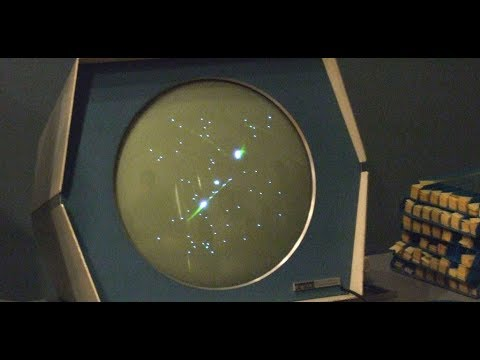

Pong (1972) -Primul joc comercial de succes, creat de Atari

Încă din 1950, informaticienii au folosit mașini electronice pentru a construi sisteme de joc relativ simple, cum ar fi Bertie the Brain în 1950 pentru a juca X și 0 sau Nimrod(d) în 1951 pentru a juca Nim(d). Aceste sisteme foloseau fie afișaje electronice de lumină și erau folosite în principal ca sisteme demonstrative la expoziții mari pentru a prezenta puterea computerelor la acea vreme. O altă demonstrație timpurie a fost Tennis for Two, un joc creat de William Higinbotham(d) la Laboratorul Național Brookhaven(d) din Upton(d) în 1958 pentru o expoziție de trei zile, folosind un computer analog și un osciloscop pentru afișaj.
Spacewar! este considerat unul dintre primele jocuri video recunoscute care s-au bucurat de o distribuție mai largă în afara expozițiilor. Dezvoltat în 1961 pentru calculatorul mainframe PDP-1(d) de la Massachusetts Institute of Technology (MIT), a permis ca doi jucători să simuleze o luptă spațială pe monitorul relativ simplist al PDP-1. Codul sursă al jocului a fost împărtășit cu alte instituții din toată țara care aveau PDP-1, în timp ce studenții MIT călătoreau, permițând jocului să câștige popularitate.
În anii 1960, au fost create o serie de jocuri pe computer pentru sisteme mainframe și minicalculatoare, dar acestea nu au reușit să atingă o distribuție largă din cauza deficitului continuu al resurselor computerelor, a lipsei de programatori suficient de pregătiți și interesați în crearea de produse de divertisment și a dificultății de a transfera programe între calculatoare aflate în diferite zone geografice.
Până la sfârșitul anilor 1970, situația s-a schimbat drastic. Limbajele de programare de nivel înalt BASIC și C au fost adoptate pe scară largă în acest deceniu, care au fost mai accesibile decât limbajele mai tehnice anterioare, cum ar fi FORTRAN și COBOL, deschizând crearea de jocuri pe computer pentru o bază mai mare de utilizatori. Odată cu apariția partajat, care a permis ca resursele unui singur mainframe să fie repartizate între mai mulți utilizatori conectați la mașină prin terminale, accesul la computer nu a mai fost limitat la câteva persoane dintr-o instituție, creând astfel mai multe oportunități pentru studenți pentru a-și crea propriile jocuri. În plus, adoptarea pe scară largă a PDP-10, lansat de Digital Equipment Corporation (DEC) în 1966, și a sistemului de operare portabil UNIX, dezvoltat la Laboratoarele Bell în 1971 și lansat pe scară largă în 1973, au creat medii de programare comune în toată țara, care au redus dificultatea partajării programelor între instituții. În cele din urmă, înființarea primelor reviste dedicate informaticii, cum ar fi Creative Computing (1974), publicarea celor mai vechi cărți de compilare a programelor precum 101 BASIC Computer Games (1973) și răspândirea rețelelor extinse, cum ar fi ARPANET, a permis programelor să să fie partajate mai ușor pe distanțe mari. Ca urmare, multe dintre jocurile mainframe create de studenți în anii 1970 au influențat evoluțiile ulterioare din industria jocurilor video într-un mod în care, în afară de Spacewar!, jocurile anilor 1960 nu au făcut-o.
În arcade și pe consolele de acasă, acțiunea rapidă și jocul în timp real au devenit standard în genuri precum jocuri de curse sau de împușcături la țintă. Pe mainframe, totuși, astfel de jocuri nu au fost în general posibile atât din cauza lipsei de afișare adecvată (multe terminale de computer au continuat să se bazeze pe teleimprimatoare în loc de monitoare până în anii 1970 și chiar și majoritatea terminalelor CRT redau doar grafică bazată pe caractere) cât și a puterii de procesare și memoriei insuficiente pentru a actualiza elementele jocului în timp real. În timp ce mainframe-urile anilor 1970 erau mai puternice decât hardware-ul arcade și consolele din acea perioadă, nevoia de a împărți resursele de calcul către zeci de utilizatori simultani prin folosirea în comun a timpului le-a diminuat semnificativ abilitățile. Astfel, programatorii de jocuri mainframe s-au concentrat pe strategie și mecanica de rezolvare a puzzle-urilor, mai degrabă decât pe acțiune în timp real. Jocurile notabile ale perioadei includ jocul tactic de luptă Star Trek (1971) de Mike Mayfield, jocul de-a v-ați ascunselea Hunt the Wumpus (1972) de Gregory Yob și jocul de război de strategie Empire (1977) de Walter Bright. Probabil cel mai semnificativ joc al perioadei a fost Colossal Cave Adventure (sau pur și simplu Adventure), creat în 1976 de Will Crowther, care a combinat pasiunea pentru speologie cu conceptele din noul joc de rol de societate (RPG) Dungeons & Dragons (D&D). Extins de Don Woods în 1977, cu accent pe fantezia înaltă inspirată de J. R. R. Tolkien, Adventure a stabilit un nou gen bazat pe explorare și rezolvarea puzzle-urilor pe baza inventarului, care a făcut tranziția pe computerele personale la sfârșitul anilor 1970.
În timp ce majoritatea jocurilor au fost create pe hardware cu capacitate grafică limitată, un computer capabil să găzduiască jocuri mai impresionante a fost sistemul PLATO dezvoltat la Universitatea din Illinois. Conceput ca un computer educațional, sistemul a conectat sute de utilizatori din Statele Unite prin intermediul terminalelor de la distanță care aveau ecrane cu plasmă de înaltă calitate și le permiteau utilizatorilor să interacționeze între ei în timp real. Acest lucru a permis sistemului să găzduiască o gamă impresionantă de jocuri grafice și/sau multiplayer, inclusiv unele dintre cele mai vechi RPG-uri cunoscute pentru computer, care s-au bazat în principal, ca de exemplu Adventure, pe Dungeons & Dragons, dar spre deosebire de acel joc s-a pus un accent mai mare pe luptă și creșterea personajelor decât pe rezolvarea de puzzle-uri. Începând cu jocuri dungeon crawl cu vedere de sus în jos precum The Dungeon (1975) și The Game of Dungeons (1975), denumite astăzi mai mult prin numele fișierelor acestora, pedit5 și dnd, RPG-urile de pe PLATO au trecut curând la o perspectivă la persoana întâi în jocuri precum Moria (1975), Oubliette (1977) și Avatar (1979), care au permis adesea mai multor jucători să-și unească forțele pentru a lupta cu monștri și pentru a finaliza misiuni împreună. Ca și Adventure, aceste jocuri au inspirat în cele din urmă unele dintre cele mai vechi jocuri pentru computere personale.
Începutul industriei moderne a jocurilor video a apărut ca urmare a dezvoltării concomitente a primului joc video arcade și a primei console de jocuri video pentru acasă la începutul anilor 1970 în Statele Unite.
Industria jocurilor video arcade s-a dezvoltat din industria jocurilor arcade preexistentă, care anterior a fost dominată de jocuri electro-mecanice (jocuri EM). După apariția jocului EM de la Sega, Periscope (1966), industria arcade a experimentat o „renaștere tehnologică” bazată pe noile jocuri EM „audio-vizuale”, ceea ce a făcut ca domeniul arcade să fie un mediu sănătos pentru introducerea jocurilor video comerciale în începutul anilor 1970. La sfârșitul anilor 1960, studentul Nolan Bushnell a avut un loc de muncă cu jumătate de normă la o sală de jocuri unde s-a familiarizat cu jocurile EM, urmărind cum se jucau clienții și ajutând la întreținerea mașinilor, în timp ce învăța cum funcționează și dezvoltându-și înțelegerea modului în care funcționează industria jocurilor.
În 1966, în timp ce lucra la Sanders Associates, Ralph Baer a avut ideea unui dispozitiv de divertisment care putea fi conectat la un monitor de televizor. Prezentând acest lucru superiorilor săi de la Sanders și obținând aprobarea acestora, el, împreună cu William Harrison și William Rusch, au creat prototipul „Brown Box” al unei console de jocuri video pentru acasă cu care se putea juca un simplu joc de tenis de masă. Cei trei au brevetat tehnologia, iar Sanders a vândut licența brevetelor către Magnavox pentru a le comercializa. Cu ajutorul lui Baer, Magnavox a dezvoltat Magnavox Odyssey, prima consolă comercială pentru acasă, în 1972.
Concomitent, Nolan Bushnell și Ted Dabney au avut ideea de a realiza un dulap/o mașină care să funcționeze cu monede și care să găzduiască un microcomputer mic și ieftin pentru a rula jocul Spacewar! Până în 1971, cei doi au dezvoltat Computer Space împreună cu Nutting Associates, primul joc video arcade recunoscut. Bushnell și Dabney au continuat afacerea singuri și au format Atari. Bushnell, inspirat de jocul de tenis de masă de pe consola Odyssey, l-a angajat pe Allan Alcorn să dezvolte o versiune arcade a jocului, de data aceasta folosind circuite electronice logice TTL. Pong de la Atari a fost lansat la sfârșitul anului 1972 și este considerat primul joc video arcade de succes. Acesta a declanșat creșterea industriei jocurilor arcade din Statele Unite atât din partea producătorilor consacrați de jocuri operate cu monede precum Williams, Chicago Coin și filiala Midway a Bally Manufacturing, cât și companii noi ca Ramtek și Allied Leisure. Multe dintre acestea au fost clone Pong care foloseau controale cu bile și palete și au dus la saturarea pieței în 1974, forțând creatorii de jocuri arcade să încerce să inoveze jocuri noi în 1975. Multe dintre companiile noi create în urma apariției lui Pong nu au reușit să inoveze pe cont propriu și s-au închis, iar până la sfârșitul anului 1975, piața arcade a scăzut cu aproximativ 50% pe baza veniturilor din vânzarea noilor jocuri. Mai mult, Magnavox a dat în judecată Atari și alți câțiva dintre acești producători de jocuri arcade - pentru încălcarea brevetelor lui Baer. Bushnell a dat câștig lui Atari, care a primit drepturi perpetue ale brevetelor ca parte a acordului. Alte companii nu au reușit să obțină drepturi de autor, iar Magnavox a câștigat în jur 100 de milioane de dolari americani daune din aceste procese de încălcare a brevetelor înainte ca acestea să expire în 1990.
Jocurile video arcade au prins rapid în Japonia datorită parteneriatelor dintre corporațiile americane și japoneze care au ținut companiile japoneze la curent cu evoluțiile tehnologice din Statele Unite. Compania Nakamura Amusement Machine Manufacturing Company (Namco) a încheiat un parteneriat cu Atari pentru a importa Pong în Japonia la sfârșitul anului 1973. În decursul unui an, Taito și Sega au lansat clone Pong în Japonia până la jumătatea anului 1973. Companiile japoneze au început să dezvolte jocuri noi și să le exporte sau să le acorde licențe prin intermediul partenerilor în 1974. Printre acestea s-a numărat Gun Fight al lui Taito (inițial Western Gun în versiunea sa japoneză), care a fost licențiat către Midway. Versiunea Midway, lansată în 1975, a fost primul joc video arcade care a folosit un microprocesor în locul circuitelor electronice logice TLL. Această inovație a redus drastic complexitatea și timpul de proiectare a jocurilor arcade și numărul de componente fizice necesare pentru a obține un joc mai avansat.
Magnavox Odyssey nu a atras niciodată publicul, în mare parte datorită funcționalității limitate a tehnologiei sale primitive bazată pe circuite electronice logice TLL. La mijlocul anului 1975, microcipurile integrate LSI au ajuns suficient de ieftine pentru a fi încorporate într-un produs de consum. În 1975, Magnavox a redus numărul de piese ale clonei Odyssey folosind un set din trei cipuri creat de Texas Instruments și a lansat două sisteme noi pe care se puteau juca doar jocuri cu minge și vâsle, Magnavox Odyssey 100 și Magnavox Odyssey 200. Între timp, Atari a intrat pe piața de consum în același an cu sistemul Home Pong cu un singur cip. Anul următor, General Instrument a lansat un microcip LSI „Pong-on-a-chip” și l-a pus la dispoziție la un preț scăzut oricărei companii interesate. Compania de jucării Coleco Industries a folosit acest cip pentru a crea seria de modele de consolă Telstar, vândută în milioane de exemplare (1976–77).
Aceste console inițiale de jocuri video pentru acasă au fost populare, ceea ce a dus la un aflux mare de companii care au lansat Pong și alte clone de jocuri video pentru a satisface cererea consumatorilor. Deși erau doar șapte companii care lansau astfel de console în 1975, erau cel puțin 82 în 1977, cu peste 160 de modele diferite doar în acel an. Un număr mare dintre aceste console au fost create în Asia de Est și se estimează că în această perioadă au fost produse peste 500 de modele de console de acasă de tip Pong. Ca și în cazul saturației anterioare de paddle-and-ball în domeniul jocurilor arcade din 1975 din cauza oboselii consumatorilor, vânzările de console dedicate au scăzut brusc în 1978, perturbate de introducerea sistemelor programabile și a jocurilor electronice portabile.
La fel cum consolele dedicate scădeau în popularitate în Occident, ele au crescut pentru scurt timp în popularitate în Japonia. Aceste TV geemu s-au bazat adesea pe modele licențiate de la companiile americane, fabricate de producători de televizoare precum Toshiba și Sharp. În special, Nintendo a intrat pe piața jocurilor video în această perioadă, alături de liniile sale de produse de jucării tradiționale și electronice actuale, producând seria de console Color TV-Game în parteneriat cu Mitsubishi.

După saturația pieței cu ball-and-paddle (joc de minge cu palete) din 1975, dezvoltatorii de jocuri au început să caute noi idei pentru jocuri, susținute de capacitatea de a folosi microprocesoare programabile mai degrabă decât componente analogice. Designerul Taito Tomohiro Nishikado, care a dezvoltat Gun Fight anterior, a fost inspirat de Breakout de la Atari pentru a crea un joc bazat pe împușcături, Space Invaders, lansat pentru prima dată în Japonia în 1978. Space Invaders a introdus sau popularizat câteva concepte importante în jocurile video arcade, inclusiv jocul reglementat de vieți în loc de cronometru sau scor stabilit, câștigarea de vieți suplimentare prin acumularea de puncte și urmărirea obținerii unui scor ridicat pe mașină. A fost, de asemenea, primul joc care a confruntat jucătorul cu valuri de ținte care trag înapoi în jucător și primul care a inclus muzică de fundal în timpul jocului, deși o simplă buclă de patru note. Space Invaders a avut un succes imediat în Japonia, cu unele arcade create exclusiv pentru mașinile Space Invaders. Deși nu a fost la fel de popular în Statele Unite, Space Invaders a devenit un succes, deoarece Midway, care era producătorul nord-american, a adus peste 60.000 de mașini arcade în 1979.

Space Invaders a condus ceea ce este considerată a fi epoca de aur a jocurilor arcade, care a durat din 1978 până în 1982. Mai multe jocuri arcade influente și cele mai bine vândute au fost lansate în această perioadă de Atari, Namco, Taito, Williams și Nintendo, inclusiv Asteroids (1979), Galaxian (1979), Defender (1980), Missile Command (1980), Tempest (1981) și Galaga (1981). Pac-Man, lansat în 1980, a devenit o icoană a culturii populare și a apărut un nou val de jocuri care s-au concentrat pe personaje identificabile și mecanisme alternative, cum ar fi navigarea într-un labirint sau traversarea unei serii de platforme. În afară de Pac-Man și continuarea sa, Ms. Pac-Man (1982), cele mai populare jocuri în acest sens în timpul epocii de aur au fost Donkey Kong (1981) și Q*bert (1982). Jocuri precum Pac-Man, Donkey Kong și Q*bert au introdus, de asemenea, conceptul de narațiune și personaje în jocurile video, ceea ce a determinat companiile să le adopte ulterior ca mascote în scopuri de marketing.
Potrivit publicației comerciale Vending Times, veniturile generate de jocurile video operate cu monede în locații din Statele Unite au crescut de la 308 milioane de dolari americani în 1978 la 968 milioane de dolari în 1979 la 2,8 miliarde de dolari în 1980. Pe măsură ce Pac Man a declanșat o nebunie și mai mare pentru jocurile video și a atras mai multe jucătoare de sex feminin în sala de jocuri, veniturile au crescut din nou la 4,9 miliarde de dolari în 1981. Potrivit publicației comerciale Play Meter, până în iulie 1982, sumele totale din monede au atins un vârf de 8,9 miliarde de dolari, dintre care 7,7 miliarde de dolari au provenit din jocuri video. Numărul de dispozitive arcade dedicate jocurilor video au crescut în timpul epocii de aur, numărul de arcade (locații cu cel puțin zece jocuri arcade) s-a dublat între iulie 1981 și iulie 1983, de la peste 10.000 la puțin peste 25.000. Aceste cifre au făcut ca jocurile arcade să fie cel mai popular mediu de divertisment din țară, depășind cu mult atât muzica pop (cu vânzări de 4 miliarde de dolari pe an), cât și filmele produse la Hollywood (3 miliarde de dolari americani).

Costurile ridicate de dezvoltare a hardware-ului dedicat jocurilor pentru arcade și consolelor de acasă bazat pe circuite logice cu componente discrete și/sau circuite integrate specifice aplicației (ASIC) cu durată de viață limitată pentru consumatori i-au determinat pe ingineri să găsească alternative. Prețul microprocesoarelor au scăzut suficient de mult până în 1975 pentru a face din acestea o opțiune viabilă pentru dezvoltarea consolelor programabile în care s-ar putea încărca software-ul unui joc dintr-o formă de suport care poate fi doar citită.
Fairchild Channel F de la Fairchild Camera and Instrument a fost lansată în 1976. Este prima consolă de acasă care folosește cartușe ROM programabile - permițând jucătorilor să schimbe jocuri - și este prima consolă de acasă care folosește un microprocesor care citește instrucțiunile de pe cartușul ROM. Atari și Magnavox au urmat exemplul în 1977 odată cu lansarea Atari Video Computer System (VCS, cunoscut mai târziu sub numele de Atari 2600) și Magnavox Odyssey 2, ambele sisteme introducând și utilizarea cartușelor. Pentru a finaliza rapid Atari VCS, Bushnell a vândut Atari către Warner Communications cu 28 milioane de dolari, ceea ce a adus infuzia de numerar necesară pentru a finaliza proiectarea sistemului până la sfârșitul anului 1977. Piața inițială pentru aceste noi console a fost inițial modestă, deoarece consumatorii erau încă precauți după saturația consolelor pentru acasă. Cu toate acestea, încă exista un interes pentru jocurile video și noi companii jucătoare au fost atrase de piață, cum ar fi Mattel Electronics cu Intellivision. Spre deosebire de consolele de acasă Pong, consolele bazate pe cartușe programabile au avut o barieră mai mare de intrare pe piață din cauza costurilor de cercetare și dezvoltare și de producție pe scară largă și mai puțini producători au intrat pe piață în această perioadă.
Această nouă linie de console a avut un moment revoluționar când Atari a obținut o licență de la Taito pentru a crea versiunea Atari VCS a succesului arcade Space Invaders, care a fost lansată în 1980. Space Invaders a dublat de patru ori vânzările lui Atari VCS, devenind astfel prima „aplicație ucigașă” din industria jocurilor video și primul joc video care s-a vândut în peste un milion de exemplare și, în cele din urmă, s-a vândut în peste 2,5 milioane până în 1981. Vânzările Atari pentru consumatori aproape s-au dublat de la 119 milioane de dolari la aproape 204 milioane de dolari în 1980 și apoi au explodat la peste 841 de milioane de dolari în 1981, în timp ce vânzările în întreaga industrie a jocurilor video din Statele Unite au crescut de la 185,7 milioane de dolari în 1979 la puțin peste 1 miliard de dolari în 1981. Printr-o combinație de conversii ale propriilor jocuri arcade precum Missile Command și Asteroids și conversii licențiate precum Defender, Atari a devenit un lider dominant în industrie, cu o cotă de piață estimată la 65% din industria mondială în 1981. Mattel s-a clasat pe locul doi, cu aproximativ 15%-20% din piață, în timp ce Magnavox a ocupat o treime îndepărtată, iar Fairchild a ieșit complet de pe piață în 1979.
O altă dezvoltare critică în această perioadă a fost apariția dezvoltatorilor terți (third-party developer). Conducerea de la Atari nu a apreciat talentul special necesar pentru a proiecta și programa un joc video și i-a tratat ca pe niște ingineri software tipici ai perioadei, cărora în general nu li se acordau credite pentru munca lor și nici nu li se acordau drepturi de autor; acest lucru l-a determinat pe Warren Robinett să-și programeze în secret numele într-unul dintre primele ouă de Paște din jocul său Adventure. Politicile Atari în acest sens i-au determinat pe patru dintre programatorii companiei, David Crane, Larry Kaplan, Alan Miller și Bob Whitehead, să demisioneze și să-și formeze propria companie, Activision, în 1979, folosindu-și cunoștințele de dezvoltare ale lui Atari VCS pentru a-și crea și publica propriile jocuri. Atari i-a dat în judecată pentru a opri activitățile Activision, dar companiile au soluționat conflictul în afara instanței, Activision fiind de acord să plătească o parte din vânzările lor de jocuri ca taxă de licență către Atari. Un alt grup de dezvoltatori de la Atari și Mattel au plecat și au format Imagic în 1981, după modelul Activision.
Dominația Atari pe piață a fost contestată de consola ColecoVision de la Coleco în 1982. Așa cum a Space Invaders a crescut vânzările de Atari VCS, Coleco a dezvoltat o versiune cu licență a succesului arcade de la Nintendo, Donkey Kong, ca un joc la pachet cu sistemul său. În timp ce ColecoVision avea doar 17% din piața hardware în 1982, comparativ cu cota de 58% a Atari VCS, s-a vândut mai mult noua consolă Atari, Atari 5200.
Câteva jocuri din această perioadă au fost considerate repere în istoria jocurilor video și unele dintre cele mai vechi din genurile populare. Jocul lui Robinett, Adventure, a fost inspirat din aventura-text Colossal Cave Adventure și este considerat primul joc de aventură grafică, primul joc de acțiune-aventură și primul joc video de rol de fantezie pe consolă. Pitfall! de la Activision, pe lângă faptul că este unul dintre cele mai de succes jocuri de la terți, a stabilit și baza jocurilor cu platformă cu defilare laterală (side-scrolling). Utopia pentru consola Intellivision este primul joc de construire a unui oraș (city-building game) și considerat unul dintre primele jocuri de strategie în timp real.
Pong (1972) -Primul joc comercial de succes, creat de Atari

Adventure (1979) -Primul joc cu un "Easter egg", ascunzand numele creatorului sau

DOOM (1993) -A definit genul FPS(first person shooter) si a revolutionat grafica 3D.

Minecraft (2009) -Cel mai vandut joc din lume